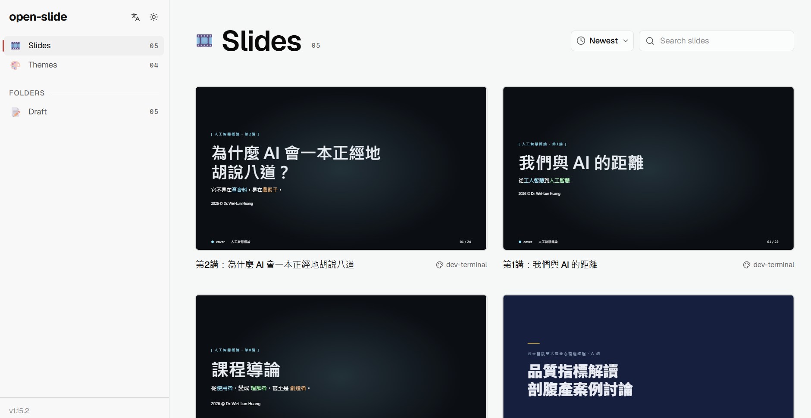

作品 · 生活工具
OpenSlide 簡報創作工作台
2026.07 · 個人專案

FIG. 37 — 產品主畫面
關於這個作品
OpenSlide 是一套以 React 元件為核心的簡報創作工作台，讓投影片可像網頁般組裝、修改與播放。
系統提供 1920×1080 畫布、縮圖導覽、全螢幕播放與靜態建置能力，適合把課程內容與互動視覺設計整合成可分享的簡報。
作品亮點
1920×1080 投影片畫布與元件化創作方式
縮圖導覽與全螢幕播放
可將簡報建置為可部署的靜態網站
支援互動視覺與多媒體內容